Ausztrál nagydíj
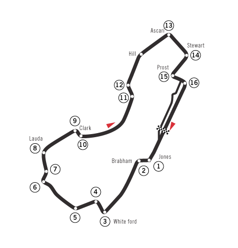A szezon első versenyét, az ausztrál nagydíjat 2019. március 17-én rendezték meg az Albert Parkban, Melbourne-ben. A pályán egy kör 5,303 km, a verseny 58 körös volt.
Bahreini nagydíj
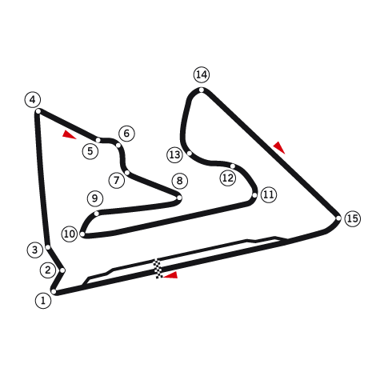A szezon második versenye a bahreini nagydíj volt, amelyet 2019. március 31-én rendeztek meg Bahreinben, mesterséges fényviszonyok között. A pályán egy kör 5,412 km, a verseny 57 körös volt.
Kínai nagydíj
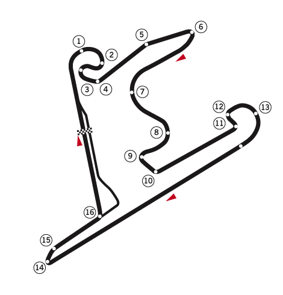A szezon harmadik versenye a kínai nagydíj volt, melyet 2019. április 14-én rendeztek meg Sanghajban. A pályán egy kör 5,451 km, a verseny 56 körös volt. Ez volt a Formula–1 világbajnokságok történetének 1000. nagydíja.
Azeri nagydíj
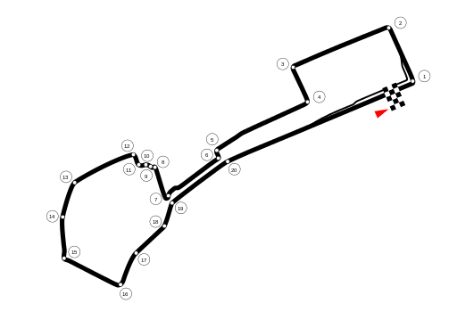A világbajnokság negyedik futama az azeri nagydíj volt, amelyet 2019. április 28-án rendeztek meg Bakuban, a városi Baku City Circuit versenypályán. A versenypályán egy kör 6,006 km, a verseny 51 körös volt.
Spanyol nagydíj
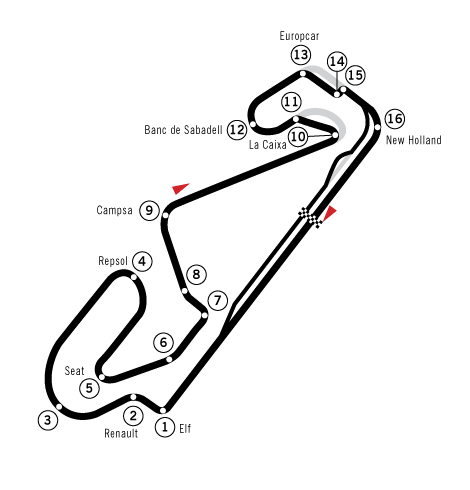A világbajnokság ötödik versenyét, a spanyol nagydíjat 2019. május 12-én, Barcelonában rendezték meg. A pálya hossza 4,655 km, a verseny 66 körös volt.
Monacói nagydíj
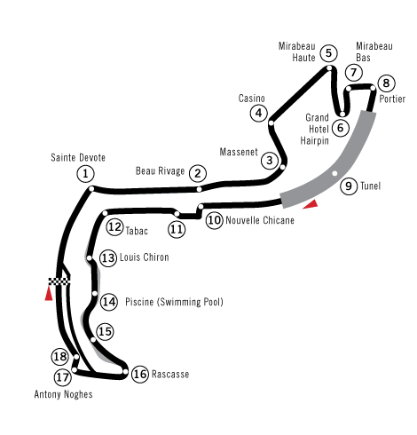A világbajnokság hatodik versenyét, a monacói nagydíjat 2019. május 26-án, a monacói utcai pályán rendezték meg. A pályán egy kör 3,340 km, a verseny 78 körös volt.
Kanadai nagydíj
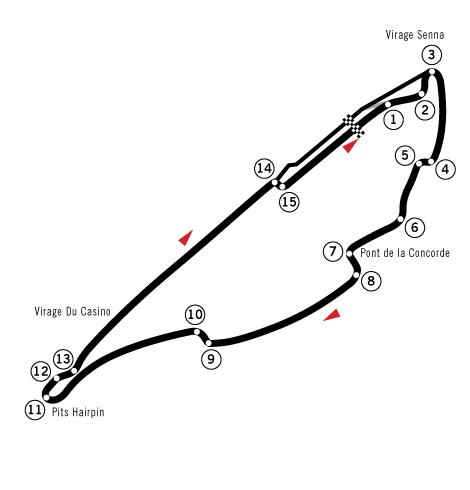A világbajnokság hetedik futamát, a kanadai nagydíjat 2019. június 9-én rendezték meg Montréalban. A versenypályán egy kör 4,361 km, a verseny 70 körös volt.
Francia nagydíj
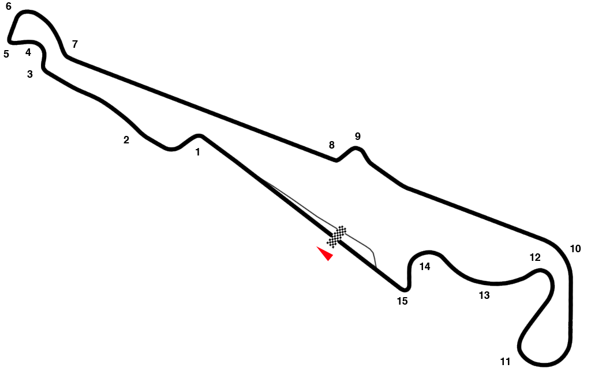A világbajnokság nyolcadik futama a francia nagydíj volt, amelyet 2019. június 23-án rendeztek meg Le Castelletben, a Circuit Paul Ricard versenypályán. A versenypályán egy kör 5,842 km, a verseny 53 körös volt.
Osztrák nagydíj
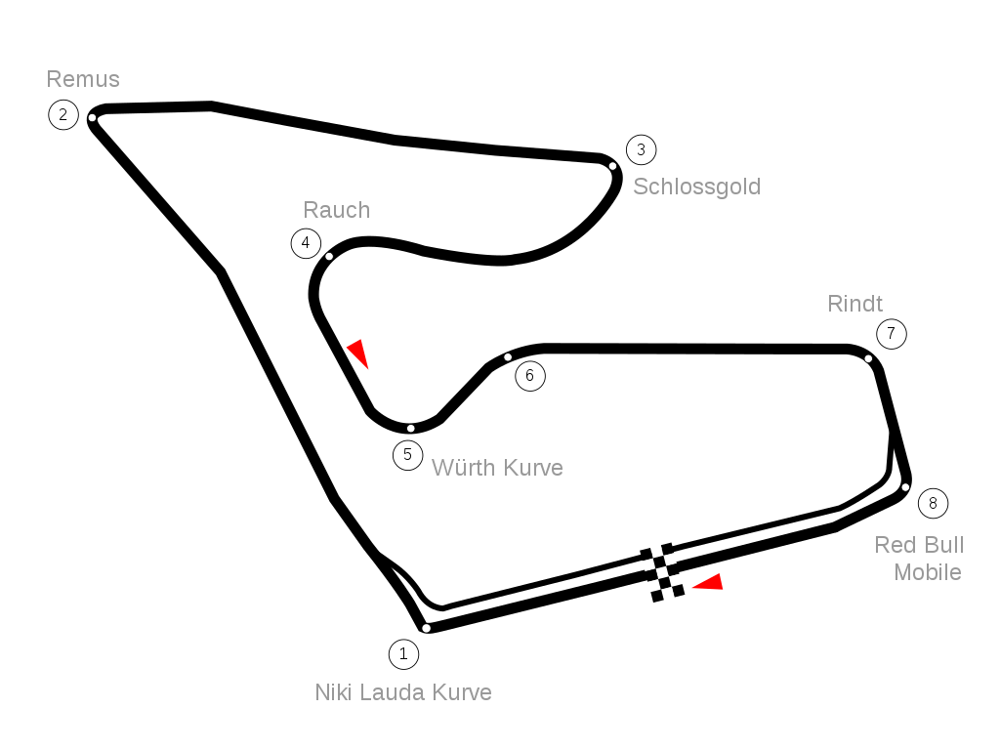A világbajnokság kilencedik futamát, az osztrák nagydíjat 2019. június 30-án rendezték meg Spielbergben. A versenypályán egy kör 4,326 km, a verseny 71 körös volt.
Brit nagydíj
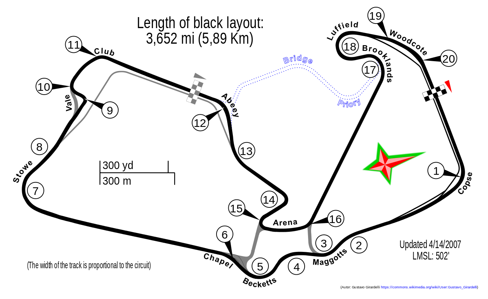A tizedik versenyt, a brit nagydíjat Silverstone-ban rendezték meg 2019. július 14-én. A pályán egy kör 5,891 km, a verseny 52 körös volt.
Német nagydíj
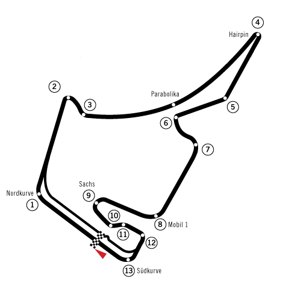Az évad tizenegyedik versenyét, a német nagydíjat 2019. július 28-án rendezték meg a Hockenheimringen. A pályán egy kör 4,574 km, a verseny az eredetileg tervezett 67 helyett 64 körös volt.
Magyar nagydíj
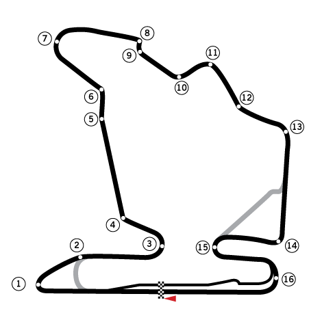A világbajnokság tizenkettedik futamát, a magyar nagydíjat 2019. augusztus 4-én rendezték meg a Hungaroringen, Mogyoródon. A pályán egy kör 4,381 km, a verseny 70 körös volt.
Belga nagydíj
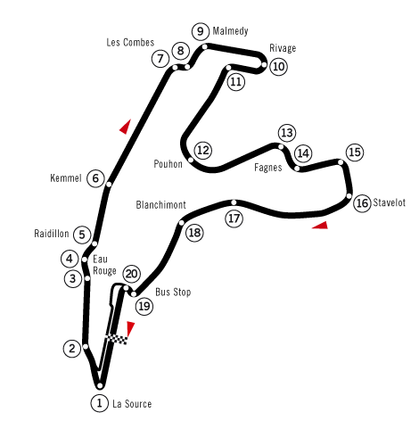A tizenharmadik versenyt, a belga nagydíjat 2019. szeptember 1-jén rendezték meg Spában. A pályán egy kör 7,004 km, a verseny 44 körös volt.
Olasz nagydíj
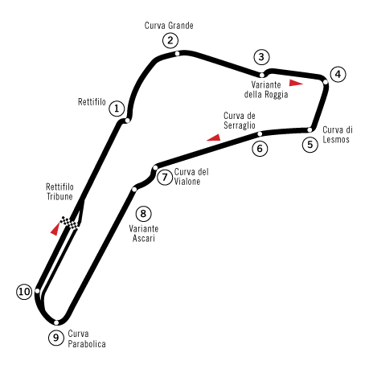A tizennegyedik versenyt, az olasz nagydíjat 2019. szeptember 8-án rendezték meg Monzában. A pályán egy kör 5,793 km, a verseny 53 körös volt.
Szingapúri nagydíj
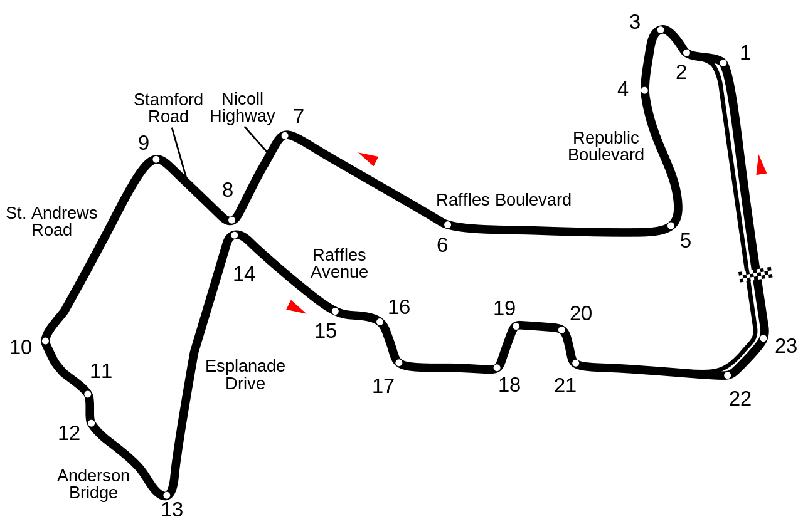A tizenötödik versenyt, a szingapúri nagydíjat 2019. szeptember 22-én éjszaka rendezték meg Szingapúrban. A pályán egy kör 5,065 km, a verseny 61 körös volt.
Orosz nagydíj

A világbajnokság tizenhatodik versenyét, az orosz nagydíjat 2019. szeptember 29-én rendezték meg Szocsiban. A pályán egy kör 5,853 km, a verseny 53 körös volt.
Japán nagydíj
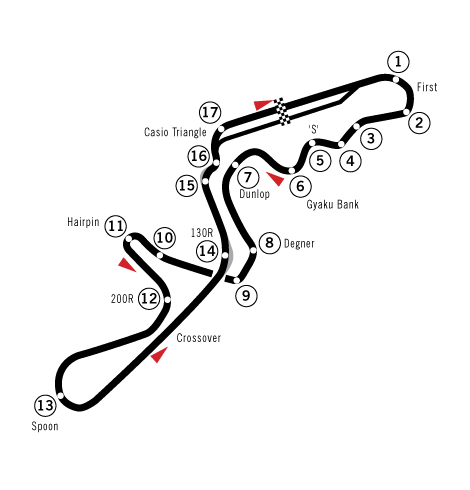A tizenhetedik versenyt, a japán nagydíjat 2019. október 13-án rendezték meg Szuzukában. A pályán egy kör 5,807 km, a verseny 53 körös volt.
Mexikói nagydíj
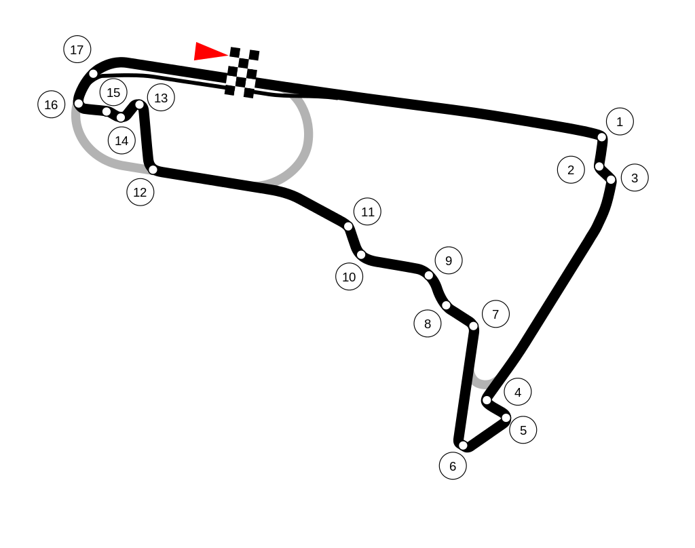A szezon tizennyolcadik versenyét, a mexikói nagydíjat 2019. október 27-én rendezték meg Mexikóvárosban. A pályán egy kör 4,304 km hosszú, a verseny 71 körös volt.
Amerikai nagydíj
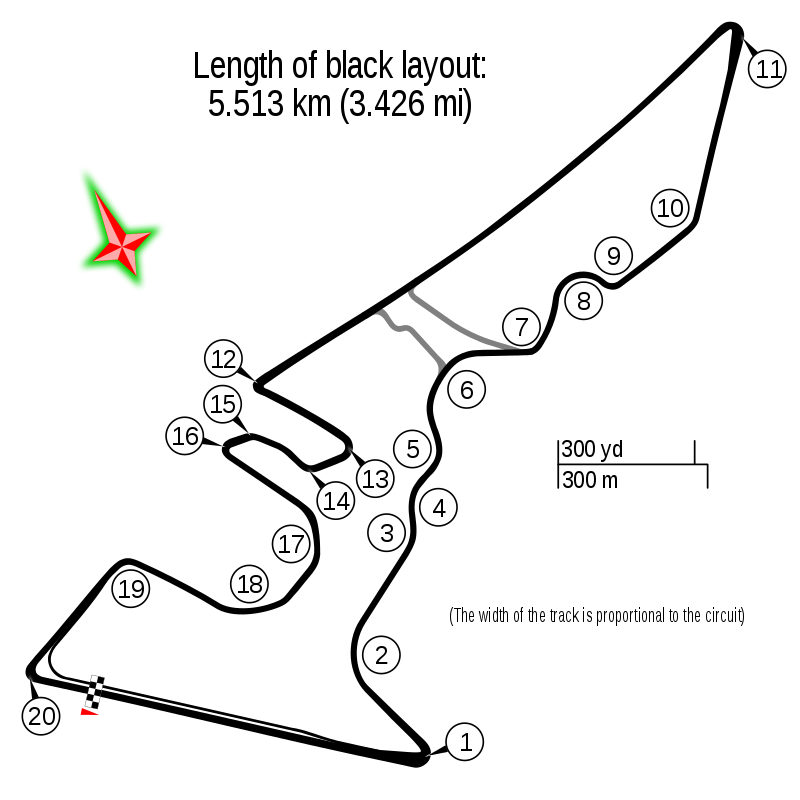A tizenkilencedik versenyt, az amerikai nagydíjat 2019. november 3-án rendezték meg Austinban. A pályán egy kör 5,513 km, a verseny 56 körös volt.
Brazíl nagydíj
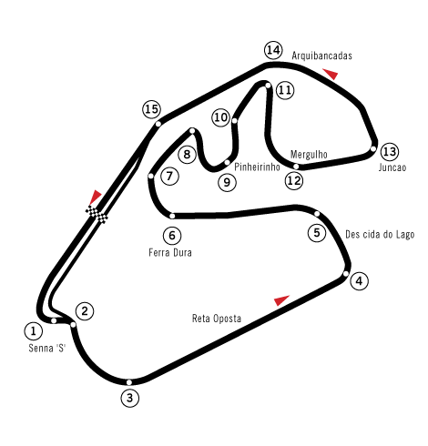A szezon huszadik versenyét, a brazil nagydíjat 2019. november 17-én rendezték meg Interlagosban. A pályán egy kör 4,309 km, a verseny 71 körös volt.
Abu-dzabi nagydíj
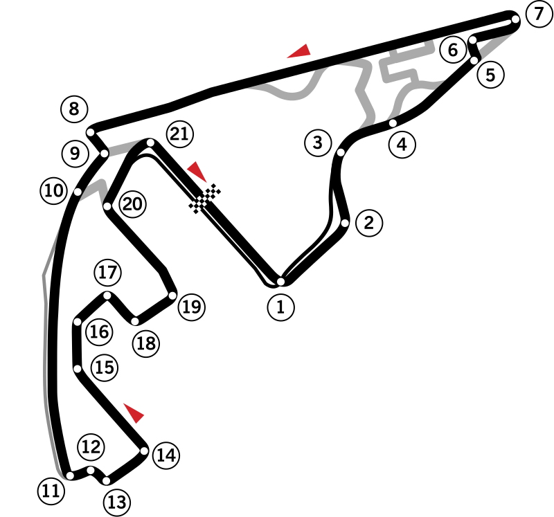A világbajnokság huszonegyedik, egyben utolsó futamát, az abu-dzabi nagydíjat 2019. december 1-jén rendezték meg Abu Dzabiban. A pályán egy kör 5,554 km, a verseny 55 körös volt.